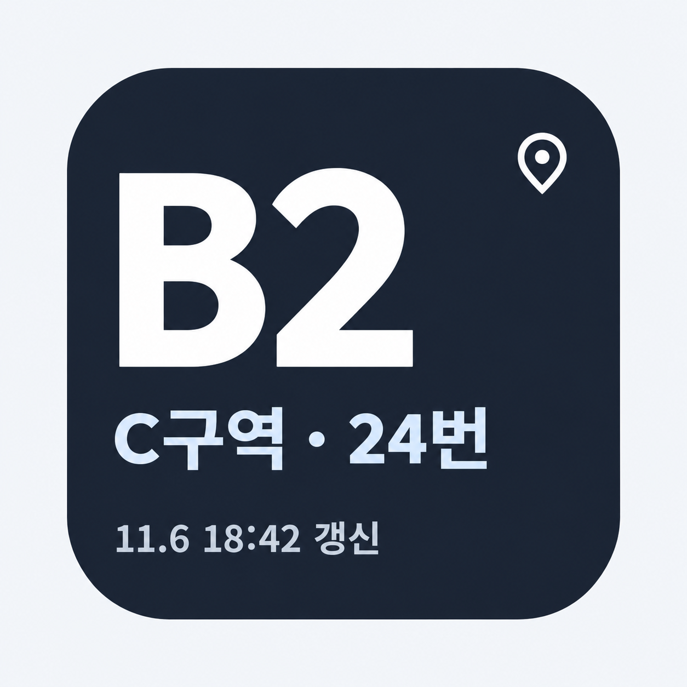
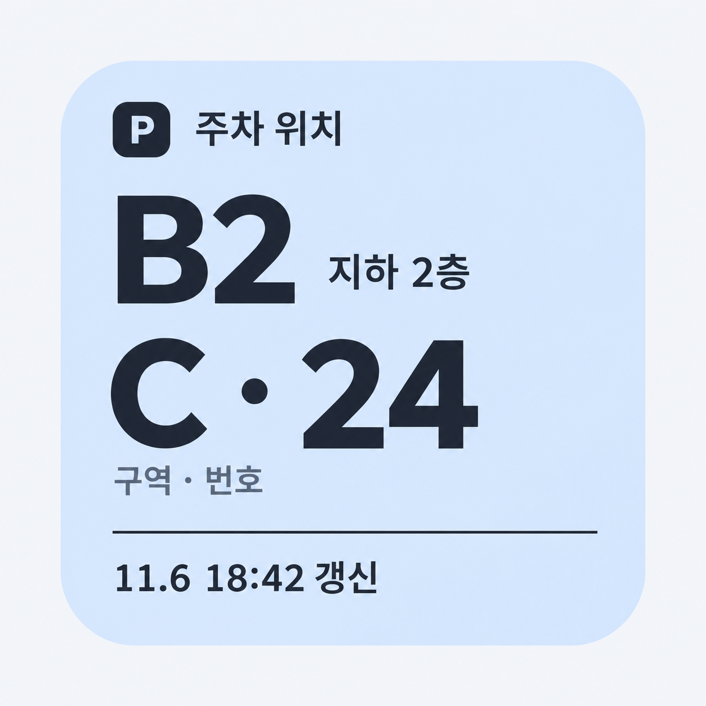
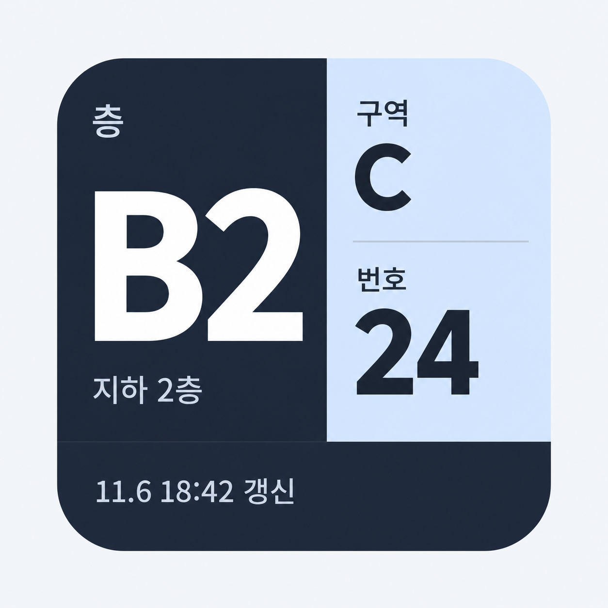
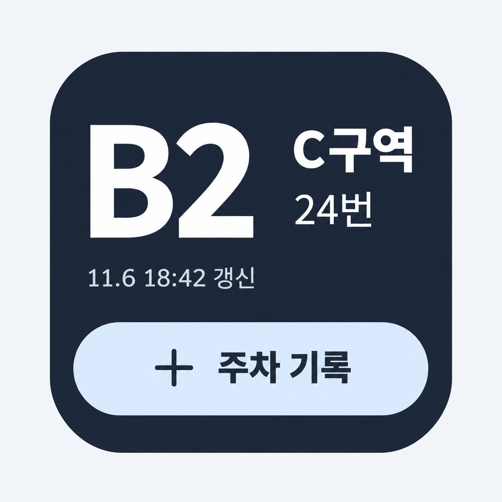

정사각형 위젯 시안
같은 주차 위치를 네 가지 구성으로 비교해 보세요. 이미지를 누르면 원본을 크게 볼 수 있습니다.

1큰 글자형
층수를 가장 크게 표시해 한눈에 위치를 확인합니다.

2주차표형
밝은 배경에 층·구역·번호를 순서대로 정돈했습니다.

3정보 분리형
층은 왼쪽, 구역과 번호는 오른쪽으로 구분합니다.

4빠른 기록형
위치 아래에 앱의 입력 화면으로 이어지는 기록 버튼을 둡니다.